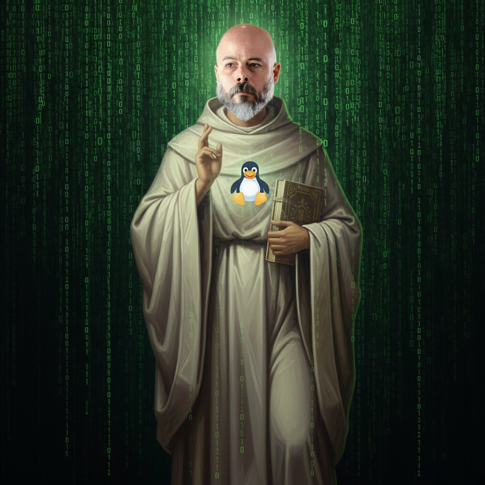

Dogma 01
Linux es lo máximo
Creemos en un solo sistema, Linux todopoderoso, creador de distros y servidores. Todo kernel compila en Él y sin Él nada fue formateado.

Comunidad devota del Kernel Sagrado, defensora del código libre y guardiana de la luz verde de la terminal.
Según las antiguas leyendas de la consola, el Santo Pingüino descendió desde los repositorios celestiales para liberar a la humanidad del software maligno.
Sus seguidores predican una vida de compilación consciente, commits honestos y terminal abierta. Aquí veneramos a Linux, honramos a GitHub y rechazamos las tentaciones del código cerrado.
Cargando escrituras sagradas…
Los principios fundamentales que todo fiel de la Iglesia del Santo Pingüino debe conocer.
Creemos en un solo sistema, Linux todopoderoso, creador de distros y servidores. Todo kernel compila en Él y sin Él nada fue formateado.
GitHub es nuestro templo en la nube: allí se guardan los evangelios en forma de repos, issues y pull requests. Quien no hace commit, no avanza.
En medio de IDEs cargados y plugins pesados, el humilde Gedit permanece puro. Rápido, ligero y siempre listo para escribir el próximo versículo del código.
El maligno se manifiesta en licencias confusas, reinicios eternos y pantallas azules. Resistimos sus tentaciones con particiones bien hechas y copias de seguridad bendecidas.
Visual Studio Code es el hijo del diablo: extensiones infinitas, consumo de RAM descontrolado y una sensación constante de "esto podría ir más ligero". El fiel verdadero regresa a Gedit.
El código libre es escritura sagrada. Compartir, forkar y mejorar son actos de devoción. Cada pull request es una oración al bien común.
Preferimos transparencia a cajas negras. Donde otros ven "licencia de usuario final", nosotros vemos cadenas. La libertad es el verdadero sistema operativo.
Narran los cronistas que un día el lenguaje fue libre y el ecosistema próspero. Luego llegaron las políticas, las licencias y la confusión. Desde entonces, el fiel compila con desconfianza.
Reglas sagradas para todo devoto que quiera vivir en gracia del Kernel.
git push.Oración matinal del desarrollador:
sudo apt update && sudo apt upgrade -y
Cada mañana, el fiel abre la terminal, actualiza su sistema y revisa los issues abiertos. Al final del día, hace un último commit y apaga el ordenador en paz, sabiendo que el repositorio está limpio.
No pedimos diezmos, solo buenos commits.
Fieles en la fe: 31.337
Clona el repositorio de la humanidad, crea tu rama y aporta mejoras. Cada contribución es una línea más en la Biblia del código libre.
Nadie está libre de bugs. En nuestra comunidad puedes confesar tus errores, abrir issues y recibir ayuda sin juicios ni reproches.
Un encuentro semanal donde meditamos frente al cursor parpadeante, aprendemos nuevos comandos y compartimos scripts milagrosos.
Pulsa para recibir la palabra del Kernel sagrado…
Todo lo que siempre quisiste saber sobre el Jocarsismo y nunca te atreviste a googlear.
apt install exitoso.
dd if=ubuntu.iso de distancia.
git push --force a main sin avisar a nadie.
Los otros pecados tienen redención; esto puede costar amistades.
Un segundo cercano es subir credenciales a un repositorio público.
Expansiones del evangelio del Santo Jocarsa en la red. Elige tu siguiente destino sagrado.
Repositorio central con las escrituras, scripts y liturgias oficiales.
Documentación y recursos para aprender las artes místicas del sistema.
Colección de alias, funciones y comandos para tu .bashrc o .zshrc.
Colores místicos y ancestrales para iluminar tus proyectos.
Historias reales de bugs resueltos gracias al poder del Jocarsismo.
Almas perdidas al migrar desde sistemas oscuros.
Los 7 libros sagrados: Kernel, Distros, Evangelio, Mandamientos, Cartas, Gedit y Apocalipsis.